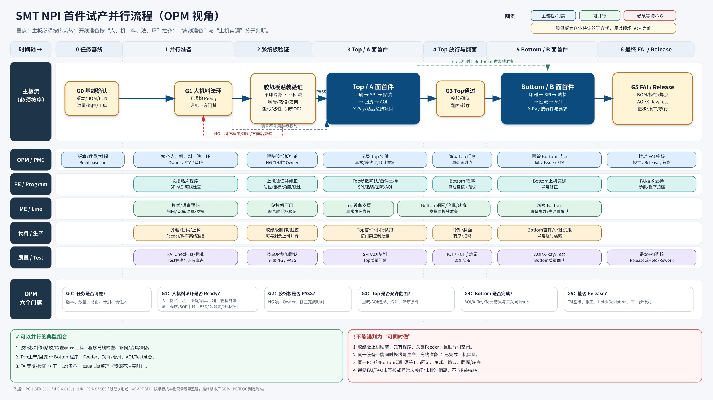
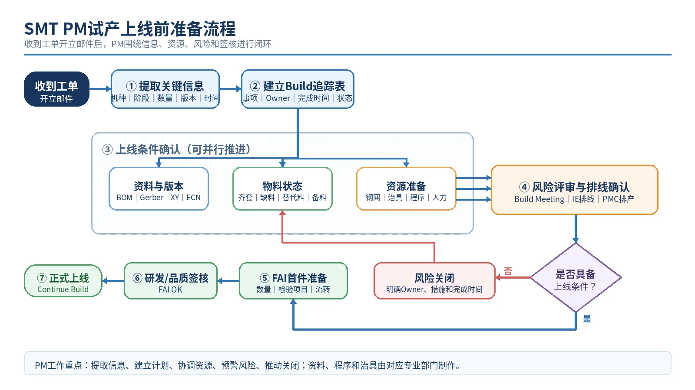
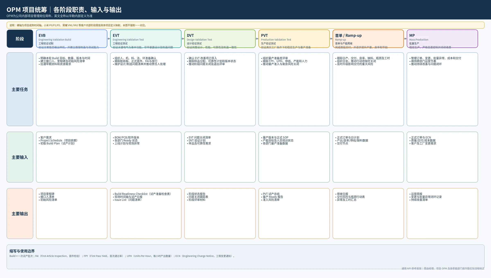

将复杂现场信息
转化为 清晰的决策依据
参与三类消费电子试产项目，重点积累项目推进、异常协调与数据复盘经验。以下精选真实工作成果，聚焦“如何判断问题、如何组织证据、如何形成可执行方案”。
经历与项目概况
在华勤 SMT 制造项目管理实习中，我参与平板、智能手表与 IPC 摄像机项目的试产推进。以下不按项目写流水账，而按工作产出和能力展开。
荣耀平板试产项目
参与支持试产，结合过站记录与现场事件整理时间线，开展异常窗口分析和会议复盘。
荣耀手表试产项目
独立负责 SMT 侧协调推进，重点关注需求变更、物料、程序、MES 与交付风险。
IPC 智能摄像机项目
独立负责 SMT 侧协调推进，跟进物料、工装及现场执行问题，推动资源对齐。
生产时间分析与复盘
从“现场为什么慢”回到“哪些节点有证据”。这组成果复用既有复盘报告中的三张核心分析图逻辑，完整保留数据区分：过程窗口、局部 Hold 与真正的净 Delay 不能简单相加。
01 · 还原两天内的真实生产节奏
来源：平板试产复盘将物料、首件、两面生产与质量异常放到一条统一时间轴，并标出发生了并行处理的窗口。
图中显示的是来自原复盘材料的关键事件与过程窗口；非所有区间都是整线停机。具体日期、线体号、板件标识已隐藏。
核心判断： 一个跨越 4h59 的 T 面异常窗口，不能直接写成“全线停线 4h59”。必须结合 B 面是否仍在生产、首件调试时间和系统记录判定实际影响。
02 · 按影响窗口排序
先量化，再判断是否为净损失；区分“值得追问”与“可以改善效率”的节点。
⚠ 部分条目是过程观察窗口而非净 Delay，图中条形长度不可直接相加。
03 · 用过站记录验证变化
选择不同板件样本对照 B→T 流转耗时，看出异常前后节拍的明显变化。
对照数据来自原 MES 图表；公开版使用匿名样本。长间隔是板件流转时间，仍需结合现场记录确认真实停线原因。
数据分析与可视化
从单个工单切换到跨项目的资源视角：平均值能描述常态，波动与极值才更接近真实排线压力。本章优先保留线体需求波动分析原稿的核心指标与热力图结构。
试产线体需求：平均稳定，峰谷剧烈
原报告：1–7月 · 初稿口径从日均需求、日最高值、月内峰谷差和高负荷天数四个维度看试产资源占用。
01 · 月度日均与峰谷区间
按原报告中的月度汇总数据可视化。展示均值与当月最大/最小的距离。
02 · 每日线体需求热力图
复用原报告逐日数据表的 1–7 月记录，按“每日占用线体数”上色，而非随意制作模拟格子。
因原稿逐日表与摘要汇总在部分月份存在统计差异，此热力图目前标记为“原始记录待复核”，不据此另外推导新的月度业绩结论。
八月欠料停线分析
8 月累计发生 12 次欠料停线，影响 249 小时。分别从责任部门和欠料类型两个角度，分析异常分布及主要影响因素。
01｜责任部门 · 停线次数
单位：次
部门 A：次数占比最高，50.0%
02｜责任部门 · 停线时长
单位：小时（h）
部门 B：时长占比最高，68.7%
03｜欠料类型 · 停线时长
单位：小时（h）
PCB 占 73.9%，为最主要影响项
分析结论 停线次数与累计时长的主要责任部门并不相同；PCB 欠料造成 184 小时影响，明显高于其他物料类别，适合作为物料齐套和风险预警的重点。
数据范围：2026 年 8 月；部门名称已匿名化。电子料／散料按原统计口径合并展示。
我把一次试产看作一条不断变化的依赖链：需要按顺序放行的主板流程，与可以提前并行的资源准备同时发生。项目协调的价值，是尽量让准备不成为临时等待。
主板按工艺顺序流转，
准备事项尽可能并行。
不把工单开立当作“已经能开线”，也不把每项资源分别 Ready 当作整个 Build Ready。通过任务基线、准备状态、设备限制与首件放行门禁，将计划转成可执行的节奏。
01｜一张图解释首件试产的并行逻辑
以我整理的 OPM 视角流程图为主视觉；下方仅提示最关键的边界，避免重复把整份 SOP 写成网页文字。

离线准备，可以前置
程序离线复核、钢网治具准备、人员到位、物料状态与质量检验条件，在不争用资源时可同步推进。
上机调试，必须满足前提
贴片机、印刷设备、SPI和AOI需要现场资源，不能把“程序正在准备”理解为“已经能上线”。
签核门禁，不可跨越
首件NG、质量未放行或偏离要求未获批准时，不能因排程紧张而跳过验证与Release。
02｜我如何把工单需求转成上线计划
围绕六个节点做责任与风险跟踪，OPM协调条件达成，专业判断仍由各对应工程与质量接口负责。
确认
齐套
与排线
放行
与交付
查看补充流程图 · 上线准备 / OPM 阶段职责

补充图：工单开立后的上线准备流程（仅作展开参考）

补充图：NPI 各阶段 OPM 的任务、输入与输出（通用参考框架）
不把“别人回复了”当作问题关闭，也不把“恢复生产”当作长期改善完成。下面精选两类真实记录，展示我如何理解风险的影响范围，并将现场问题转成有负责人、有节点的行动项。
夹治具面别不匹配：为什么问题在首件阶段才暴露？
来源：荣耀平板试产复盘资料；公开版隐藏具体线体、人名、工单与板件编号。关键时间节点用于复盘过程分析。
现场信号
首件阶段发现光板面别与炉载具 / 夹治具使用面不匹配，出现异常等待。
现场处置
经工程人员现场确认，通过临时调整夹具结构恢复生产。
复盘追问
产前是否完成面别识别、试装验证、责任确认？异常直接停线时长是多少？
下一步行动
推动明确夹具适用面别标识、上线前点检、改善负责人和验证证据。
两条线同时需要资源：仅确认“有工装”为什么不够？
来源：7月31日现场学习及异常复盘日报；该案例展示风险拆解方法，不宣称所有问题已经关闭。
记录到的风险组合
两线存在 Tray 盘共用冲突；替代盘未经充分适配验证；循环载具周转有限；特殊吸嘴也存在数量约束。单独看每个资源都“有”，合在一起却可能无法支持同时上线。
从“有无”升级为“可用性”
需要同时检查需求数量、可用数量、包装 / 尺寸兼容、线体并行时段、周转周期和备用方案；不可把替代方案等同于已验证可用方案。
统计需求
兼容性
等待风险
确认可执行方案
从现场响应到真实关闭
一套可迁移到不同异常场景的检查方式；不是公司正式SOP，也不表示所有案例已完成全部步骤。